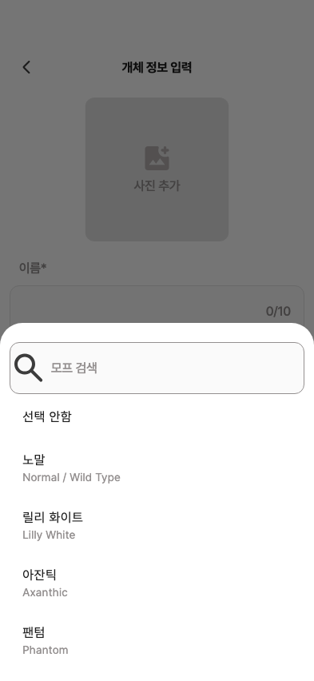

29 · 모프 선택 기본 목록
28번 자간 수정 완료. 다음은243 현재 모프 화면과 원본 비교입니다.
주요 차이
① 하단시트 → ‘모프 선택’ 제목/뒤로가기가 있는 전체 화면
② 카탈로그 순서 → 초성별 정렬·섹션·구분선
③ 한글+영문 두 줄 → 원본 한글 한 줄
④ 검색 문구 ‘모프 이름 검색’ · 원본에 없는 검색 아이콘 제거
기존 크레스티드 카탈로그는 유지합니다. Figma의 다른 종 모프 예시를 신규 데이터로 추가하지 않습니다.
Figma · 모프 선택 전체 화면 현재 제품 위젯 · 하단시트
현재 제품 위젯 · 하단시트
별도 확정 필요: ‘선택 안함’ 행은 기존 모프를 지우는 기능이지만 원본에는 없습니다. 유지/제거 또는 다른 초기화 위치를 결정해야 합니다.
현재 검색 · 선택 결과
검색→선택→폼 반영은 정상입니다. 원본 첫 행16pt/나머지 주된 행18pt의 서체 예외도 상세 기록에 남겼습니다.
수치·동작·수정 방향